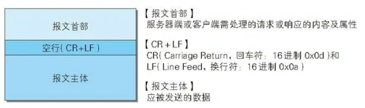
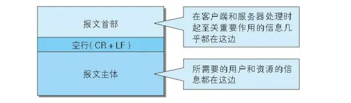
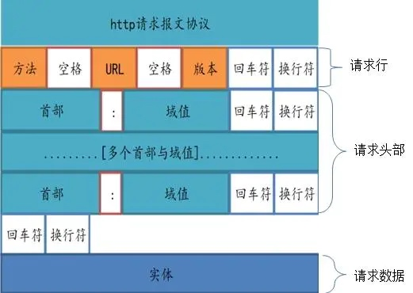
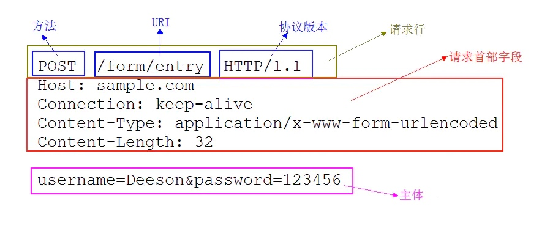
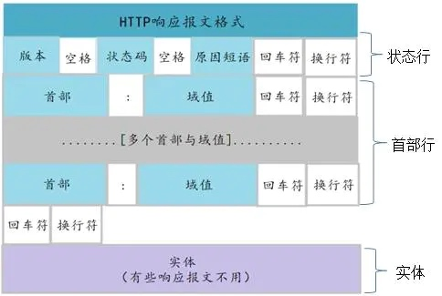
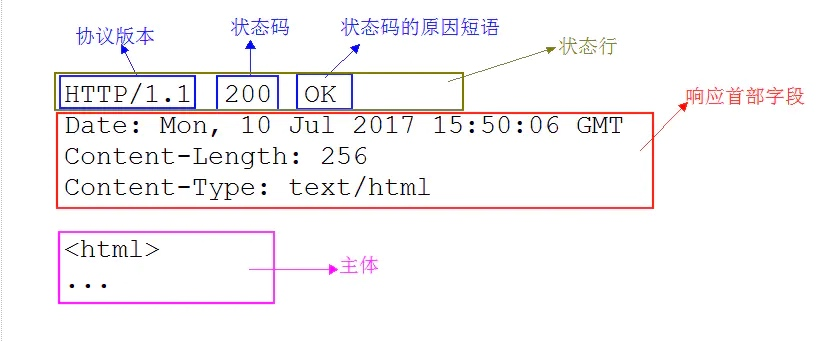

1.HTTP 报文
用于 HTTP 协议交互的信息被称为 HTTP 报文。请求端（客户端）的 HTTP 报文叫做请求报文；响应端（服务器端）的叫做响应报文。HTTP 报文本身是由多行（用 CR+LF 作换行符）数据构成的字符串文本。
2.HTTP 报文结构
HTTP 报文大致可分为报文首部和报文主体两部分。两者由最初出现的空行（CR+LF）来划分。通常，并不一定有报文主体。如下：
HTTP 报文结构

2.1请求报文结构
请求报文结构
请求报文的首部内容由以下数据组成：
- 请求行 —— 包含用于请求的方法、请求 URI 和 HTTP 版本。
- 首部字段 —— 包含表示请求的各种条件和属性的各类首部。（通用首部、请求首部、实体首部以及RFC里未定义的首部如 Cookie 等）
请求报文的示例，如下：
请求报文示例
2.2响应报文结构
响应报文结构
响应报文的首部内容由以下数据组成：
- 状态行 —— 包含表明响应结果的状态码、原因短语和 HTTP 版本。
- 首部字段 —— 包含表示请求的各种条件和属性的各类首部。（通用首部、响应首部、实体首部以及RFC里未定义的首部如 Cookie 等）
响应报文的示例，如下：

HTTP 报文首部之请求行、状态行
1.请求行
举个栗子，下面是一个 HTTP 请求的报文：
GET /index.htm HTTP/1.1
Host: sample.com
其中，下面的这行就是请求行，
GET /index.htm HTTP/1.1
- 开头的 GET 表示请求访问服务器的类型，称为方法；
- 随后的字符串 /index.htm 指明了请求访问的资源对象，也叫做请求 URI；
- 最后的 HTTP/1.1，即 HTTP 的版本号，用来提示客户端使用的 HTTP 协议功能。
综合来看，大意是请求访问某台 HTTP 服务器上的 /index.htm 页面资源。
2.状态行
同样举个栗子，下面是一个 HTTP 响应的报文：
HTTP/1.1 200 OK
Date: Mon, 10 Jul 2017 15:50:06 GMT
Content-Length: 256
Content-Type: text/html
<html>
...
其中，下面的这行就是状态行，
HTTP/1.1 200 OK
开头的 HTTP/1.1 表示服务器对应的 HTTP 版本；
紧挨着的 200 OK 表示请求的处理结果的状态码和原因短语。